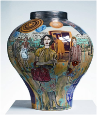
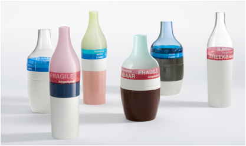
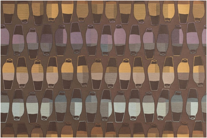
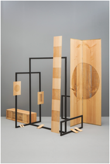
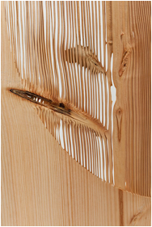
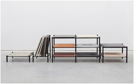
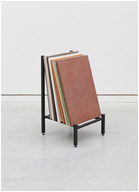
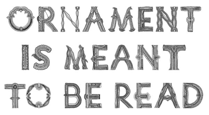
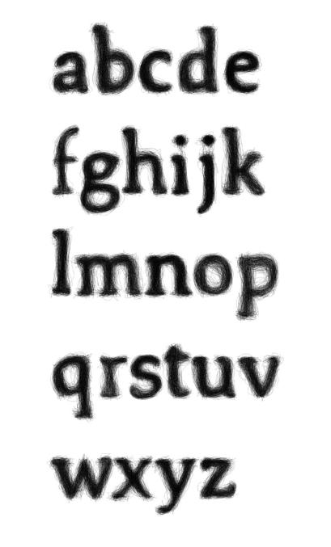
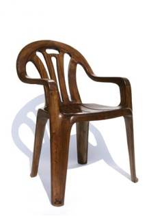

Hoofdstuk 1 (Naam volgt nog)
1.1 Ambacht
van vroeger
Twee eeuwen
geleden werd alles nog met de hand gemaakt. In de tweede helft van de 18e eeuw
kwamen er pas machines. In eerste instantie was deze industriële revolutie
populair, het was nieuw en de productie ging veel sneller. Pas toen ambacht
niet meer nodig was, werden mensen kritisch over de voordelen van de ambacht.
Zij waren van mening dat de massaproductie van veel mindere kwaliteit was dan
als het met de hand zou worden gemaakt. Daarnaast was er minder werkgelegenheid
en mensen waren niet tevreden over de slechte werk- en woonomstandigheden van
de fabrieksarbeiders. Wat er gebeurde was dat er een pro-ambacht beweging tot
stand kwam en rond 1900 bereikte deze zijn eerste hoogtepunt. Terwijl er voor
miljoenen mensen betaalbare producten beschikbaar werden, die voortkwamen uit
machines. Begon de elite, de voorstanders van de ambacht, de duurdere en
handgemaakte kunstvoorwerpen te kopen. Deze voor en tegen de ambacht discussie is
altijd al aan de orde, zelfs nu, we willen weer terug naar de ambacht. (1)
1.2
Authentiek zijn is in
In bijvoorbeeld supermarkten vind
je authentiek en ambachtelijk brood, crackers, jam, kaas, chips en ga zo maar
door. Maar niet alleen in de supermarkten zie je de ambacht terug. Steeds meer
zie je een hand gebreide sjaals, mond geblazen glas en in ons interieur vind je
steeds vaker een authentieke tafel en een vaas gekocht op de rommelmarkt dat
staat op een kast van de Ikea. (1)
Deze toegenomen aandacht voor
authenticiteit wordt veroorzaakt door een aantal trends. Onder anderen door de
globalisering want tegenwoordig kunnen we overal ter wereld dezelfde hamburger
eten, bijvoorbeeld die van de McDonald’ s, waardoor we juist de zelfgemaakte
gehaktbal van onze oma herwaarderen. Ook is er een grote afstand van de natuur
ontstaan. Dit komt voornamelijk door de massaproductie, de digitalisering en
de verandering van het mediagebruik. We weten vaak niet meer wat echt is en wat
niet en daarom willen we weer terug naar het natuurlijke ‘echte’ product. De
confrontatie met andere culturen leidt vaak tot angst en onwetendheid waardoor
we het traditionele lokale leven veel meer waarderen dan voorheen. En natuurlijk
door de economische crisis die voor vele van ons zijn sporen achter heeft
gelaten.
Door deze gebeurtenissen zijn we
weer met beide benen op de grond gaan staan en zoeken we bevestiging in
kleinschaligheid, verbodenheid en eenvoud. (2) Handgemaakt is eerlijk,
kleinschalig, uniek en daarom menselijk. (1)
1.3 É
Volgens Cornel Bierens (19..), kunstenaar en schrijver, wordt de 21e eeuw een
gouden tijd voor de ambachtelijkheid omdat de ideeën- en theorie kunst zijn
langste tijd heeft gehad. Kunst zal niet meer zo afhankelijk zijn van het erbij
vertelde verhaal of filosofie. Het conceptualisme heeft zijn tijd gehad. Steeds
vaker zie je kunstwerken, gemaakt met de hand die prijzen winnen, die populair
zijn. (3)
“Ik werk niet vanuit concepten. Ik vind het gewoon
fijn om dingen te maken.” – Couzijn van Leeuwen
(19..), kunstenaar
“Kunstenaars zien
weer helemaal de kracht van het elementaire maakwerk en hun wapenkast met
technieken is voller dan ooit.” – Cornel Bierens
Bierens beweerd dat, anders dan voorspeld, de uitbreiding en de
technologieën van de camera en computer niet geleid heeft tot de langzame dood
van oude media als verf en het doek. Hij refereert naar de opkomst van borduren
en pottenbakken. Alleen met technische handelingen kan hun werk met volle
glorie tot stand komen. Hij zegt dat deze terugkerende interesse voor oude
technieken samen gaat met de omarming van nieuwe middelen als de 3D-printer.
Hierdoor is het mogelijk om vrijwel alles zelf te maken. Met dank aan de financiële
crisis lijkt de massa-industrie haar beste tijd te hebben gehad. Kleinschalige
productie is nu aan de orde. Dit zijn allemaal gunstige ontwikkelingen voor het
opbloeien van de ambacht. (3)
Door deze
economische crisis kijken kunstenaars en ontwerpers weer naar hun geschiedenis,
naar hun identiteit. Dit houdt in dat ze veel onderzoek doen naar hun regionale
wortels en ambachtelijke technieken die hierbij horen. Klakkeloos deze
technieken overnemen die zijn gedaan is hierbij niet aan de orde. Als
kunstenaar of ontwerper ben je altijd opzoek naar wat nieuw en uniek is. (1)
1.4 De nieuwe ambachtelijke revolutie
In het begin
van deze zogeheten ‘ambachtelijke revolutie’ werd de ambacht vooral gebruikt om
commentaar te geven.
Een voorbeeld
hiervan is het werk van kunstenaar Grayson Perry
(1960). Perry staat bekend om zijn sterk autobiografische elementen in zijn
werk en in het gebruik van zijn alter ego “Claire”. (4) Één
van zijn bekende werken zijn zijn vazen. Deze vazen
hebben de typische ambachtelijke klassieke vorm, maar daarop zitten schilderingen die de
keerzijde van deze burgerlijke stijve uitstraling weergeven.

You Are Here,
2011 The
Rosetta Vase, 2011
Ook Berend
Strik (1960), een Nederlandse beeldende kunstenaar, geeft op deze zelfde
ambachtelijke manier commentaar. Strik is het bekendst om zijn in de jaren
90 hervonden geborduurde werken. Voor een mannelijke kunstenaar is borduren een
interessante keuze. Hij past deze techniek toe op vooral gevonden materialen.
Foto’ s uit familiealbums, zelfgemaakte foto’ s en afbeeldingen uit
tijdschriften. Passend bij de uitspraak van Cornel Bierens over dat
ambachtelijk werk van nu geen inhoud heeft en niet conceptueel is, heeft Strik
deze techniek gekozen omdat het geen handschrift laat zien. (5)
In zijn werk ‘Gevoelige Stof’ en ‘Blue’
combineert hij porno met de dodelijke truttige associatie van het borduren. Overigens
borduurt hij niet zelf, maar laat hij dat doen. Veel van zijn werken zijn in de
geboorte land van zijn vader, Hongarije, gemaakt.
Afbeeldingen
komen nog
1.5 Mooie (moderne)
ambacht
Commentaar
leveren hoeft tegenwoordig niet meer. Ontwerp mag ook weer alleen mooi zijn.
Voor de Nederlandse industrieel ontwerper Hella Jongerius (1963) is kunst te
vrij en houdt ze van de grenzen die centraal staan in het ontwerpen. Waarom ze
in het rijtje staat van ambachtelijke ontwerpers? Dat is onder anderen omdat ze
het liefst werkt met haar handen. Haar schetsen maakt ze zelden op de computer.
Haar visie is dat het werk wat voort komt uit haar handen veel “slimmer” is dan
wat er voort komt uit haar hoofd. De foutjes die je maakt tijdens het maken van
proefmodellen zijn veel interessanter dan het schetsen op de computer waarbij
alles al snel perfect is. Volgens Hella Jongerius gaat ambacht over iets maken
wat je tot in de puntjes kunt perfectioneren en waarbij een objecten die hetzelfde
zijn in detail nooit hetzelfde is. (6)

Long Neck and Groove Bottles, 2000

Vases Upholstery
fabric, É
Veel
werkplaatsen zoals het Europees Keramisch Werk Centrum in Den Bosch en het Textielmuseum
in Tilburg merken op dat er een flinke toename is van niet-ambachtelijke
opgeleide kunstenaars die vooral komen uit de mode-, architectuur-,
schilderkunst- en autonome sector. Deze hedendaagse kunstenaars willen alleen niet
meer terug naar de ambacht omdat de technische beheersing niet meer nodig,
zoals bij de traditionele kunstenaars, is. Het is geen doel op zich. Het wordt
nu meer gezien als een versterking voor het artistieke eindresultaat. (7)
1.6 Experimenteren
met oude gewoontes
De nieuwste
trend onder ontwerpers is om oude gewoontes om te zetten naar nieuwe
ambachtelijke technieken. Het gaat hierbij niet om wát de ontwerper maakt maar
om hóé hij het maakt. Het conceptuele aspect van ontwerpen wordt vervangen door
het onderzoeken naar nieuwe grondstoffen en experimenten naar technieken. (7)
De jonge
ontwerper Lex Pott (1985) gebruikt dit experimenteren
met oude ambachtelijke handelingen in zijn werk. Zijn werk komt voort uit de
oorsprong van materialen als hout, steen en metaal. Zijn werk is direct en
verliezen daardoor niet hun essentie. (8)
Voor een van
zijn projecten, genaamd ‘Diptych’ , gebruikt hij het
natuurlijke, ambachtelijk product hout en combineert hij dit met zandstralen.
Doordat bepaalde jaarringen van het hout lichter, poreuzer zijn en verschillen
in hardheid worden deze weggeblazen door de zandstraalmachine. De harde
jaarringen blijven bestaan waardoor er bij elk stuk hout een ander patroon
ontstaat. De hoeveelheid van de harde en zachte jaarringen beslissen het
uiterlijk van het werk. Iets ontstaat dus per toeval. (7)


Diptych 2014
In opdracht van
New Window
Ontwerpster Mieke
Meijer (1982) heeft een passie voor materiaal en detail en dat is terug te
vinden in het, door haar gemaakte, industriële autonome werk. Tijdens het maken
van het werk ‘Materialisme’ (2013) stond het onderzoeken naar industriële
materialen zoals messing en glas centraal. Ze heeft onderzocht hoe deze
materialen er uit zien als ze met de hand worden gemaakt en laat zien hoe
materialen vervormen omdat ze op een andere, experimentele en vooral
ambachtelijke manier worden behandeld. Ze heeft daarom deze en andere
vloeistoffen gegoten in zelfgemaakte mallen waardoor het zelf gieten van de
vloeistoffen de uitkomst altijd anders is. (7)(9)
 
Materialisme,
2013
Door
onze interesse in het verlangen van vroeger, de echtheid en originaliteit
willen we weten waar producten vandaan komen en hoe ze zijn gemaakt.
Grafisch vormgever
en typograaf Hansje van Halem laat zich bijvoorbeeld
inspireren door traditionele kantklostechnieken. Op deze techniek heeft ze een
lettertype gebaseerd genaamd de ‘Doily’ . Deze letter
is net als bij het kantklossen gebouwd uit geografische en decoratieve figuren.
Een letter
die gebaseerd is op kantklossen. Van Halem is erg
geneigd om zeer gedetailleerde sier letters te ontwerpen die haar herinneren
aan de sierlijke draden van kant. De letters zijn getekend met een fineliner en
een letter-grid en er is geen vast systeem in het
tekenen. Het detailleren gaat zo ver dat ze voor elke letter meerdere versies
heeft gemaakt, zodat nooit dezelfde ontworpen letter in een woord staat.

Doily, 2009
Met deze zelf
getekende letter Doily is ze niet begonnen. In 2003
studeerde ze af met haar ‘Scratched Letter’ aan de
Rietveld Academie in Amsterdam. Dit alfabet kwam tot stand door haar zelf
ontwikkelde digitale pen waarvan krassige letters
zijn opgebouwd uit lijnen die zichzelf overlappen.

Scratched Letters, 2003
Met dit
digitale schrijfwerk heeft ze 6 jaar geëxperimenteerd totdat ze de
ambachtelijk, klassieke pen herontdekte. Haar fascinatie naar handgemaakte
letters ging zo ver dat ze drieënhalfjaar lang een cursus kantklossen heeft
gevolgd. (10)(11)(12)
1.7 Waarom
moeten we de ambacht behouden?
Arjo Klamer(1953), hoogleraar culturele
economie aan de Erasmus Universiteit in Rotterdam, heeft zich samen met een
groep onderzoekers verdiept in de Nederlandse ambachtseconomie en die
daarbuiten. Ze kwamen tot de conclusie dat Nederland achter loopt in
vergelijking met Duitsland met haar ‘maak-cultuur’ en Engeland die het creatief
vakmanschap koestert. Vooral Japan heeft een levendige ambachtscultuur want in
Japan is ambacht een nationale trots. Iemand die een ambacht ‘meestert’ is een
persoon met groot aanzien.(1)
Toch is er in
Nederland iets aan het veranderen. Politici spreken al over het belang van de vakmanschap
(1) en steeds meer instellingen zetten zich in om deze te behouden (VIE).
Het VIE staat
voor Nederlands Centrum voor Volkscultuur en Immaterieel Erfgoed en zijn van
mening dat er voor veel oude ambachtslieden weinig mensen zijn die het handwerk
willen voortzetten. Als een ambacht op de lijst van het VIE komt dan moet er
een zogeheten erfgoedzorgplan zijn. Hierin moet worden beschreven hoe het
ambacht in leven wordt gehouden en hoe het wordt doorgegeven aan volgende
generaties. (nu.nl)
We weten nu dat
we van ambachtelijke producten houden en deze belangstelling groeit nu al meer
dan tien jaar, zelfs de overheid bemoeid zich er nu mee. De reden waarom de
overheid de ambacht wil stimuleren is door de voorzichtige omkeer van de
maakindustrie naar Nederland. Wat nu vooral terugkeert is een meer
gespecialiseerde-, ambachtelijke- en kleine creatieve maakindustrie. Het
probleem is wel dat de hiervoor benodigde vakmensen ontbreken en daarom moet
het vakonderwijs worden gestimuleerd. ‘Het ambacht moet het respect en de
waardering van weleer terugkrijgen. Ambacht moet weer hip en modern gevonden
worden.’ (1) - Mienke Simon Thomas (Conservator Vormgeving museum
Boijmans van Beuningen
Er
zijn steeds meer kunstenaars die interesse tonen in de ambacht, zowel schilders
als ontwerpers. Langzamerhand zal duidelijk worden dat goed ambacht schap niet
alleen essentieel is voor een kwalitatief hoogstaande samenleving maar ook voor
de economie.
Als je aan
ambacht denkt, denkt men vooral aan de clichés, dat ambacht lullig en oubollig
is. Ik vraag me af of dit nog terecht is. Vele oudere, historische objecten
spreken voor zich want ze zijn al heel snel knap gemaakt en daarin valt er voor
de hedendaagse kunstenaars en (grafisch) ontwerpers niet veel meer uit te halen.
Maar zij laten zich hierdoor inspireren, ze herontdekken oude technieken,
reflecteren op oude tradities en combineren deze met moderne technologieën. Er
ontstaan totaal nieuwe werken, iets waar je 200 jaar geleden nog niet eens over
had kunnen dromen. (1)
Esmé Hofman, vlechtwerkvormgever, probeert
op haar eigen manier de ambacht te behouden en te innoveren. Door samen te
werken met ontwerpers ontstaan steeds nieuwe en verassende producten waarbij ze
gebruik maakt van traditionele technieken.
“Het
(vlecht)ambacht heeft een nieuwe impuls nodig voor de toekomst. “ (Esme Hofman) Een typisch voorbeeld van een ambacht in een
nieuw jasje steken. Hofman is de enige in Nederland die deze techniek beheerst
en is daarom uniek in haar soort. (1)(13)

Naast dat een
ambachtelijk product eerlijk moet zijn , zijn hedendaagse kunstenaars en
ontwerpers ook gericht op het begrip ‘echt’ . Maarten Baas (19..) herontwierp de
hedendaagse witte plastic tuinstoel, het goedkope massameubel bij uitstek. Hij maakte er een houten variant van waarbij je
je afvraagt of deze stoel van echt hout is of een plastic variant met een
houten printje of is het toch bekleed met een dun laagje fineer? (1)(14)

Plastic Chair In
Wood, 2008
Men is van mening dat ambachtelijke kunst beter is dan
iets gemaakt met de computer. Dit omdat het met de hand gemaakt is en daarom “echter” is en veel meer
waarde heeft, het is unieker. Maar is dit in alle gevallen zo? Waarom zou een handgemaakt product beter
moeten zijn dan een die ontstaan is uit de computer?